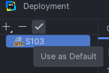

Pour déployer le site nous nous sommes aidés de la vidéo de Mr Giustignano qui est la suivante :
SAE S1 03 24 25 CommentDeployerUnSite - Vidéo de Mr Giustignano
Nous allons résumer les principales étapes du déploiement d’un site avec les éventuels problèmes qu’une personne peut rencontrer puisque nous les avons rencontrés. Cette explication est le résultat de nos recherches personnelles entre le tuto ci-dessus et de sources extérieures.
Adresse IP
Il faut mettre sa machine virtuelle en réseau pont puisqu’elle correspond à l’adresse IP du réseau domestique. Ainsi, toutes les personnes connectées à notre réseau local pourront y accéder. On récupère donc l’adresse IP de notre réseau en effectuant la commande : ip -c addr. On a un pavé d’informations mais la seule qui nous intéresse est la suivant :
Cette dernière va varier mais commence communément par 192.168.x.x.
Service SSH
Il peut être également utile d’installer un service SSH, puisque le terminal de la machine hôte
est davantage pratique concernant les manipulations (on peut copier et coller). Une fois l’installation
terminée on exécute en tant qu'administrateur le terminal de la machine hôte et on tape la commande suivante
: ssh nomutilisateur@ip.
L’ip correspond à celle que l’on a récupérée précédemment.
Si tout fonctionne correctement on obtient le paragraphe suivant :
S’il y a “connection timed out”, vérifiez que le réseau est bien en pont. L’installation correcte du service SSH est importante dans le lien du WebStorm avec notre serveur web.
Apache 2
Nous allons utiliser le service d’apache2 pour déployer notre site. On l’installe avec la commande suivante : sudo apt install apache2. En tapant l’adresse IP dans un navigateur on obtient la page apache2 suivante :
Cette dernière se trouve à l'emplacement /var/www/html/index.html comme indiqué. Nous n’avons pas les droits d’accès pour ce chemin, nous allons donc remplacer ce chemin par un autre qui constitue notre site.
Déplacement
On crée un répertoire grâce à la commande mkdir <nom répertoire>.
Dans notre cas, il s'appelle monsite.fr.
Nous allons alors changer les configurations d’apache2. En regardant de plus près les dossiers on se rend
compte que le fichier de configuration est 000-default.conf. On va donc
le modifier en utilisant la commande sudo nano
/etc/apache2/sites-enabled/000-default.conf et en remplaçant le chemin qui se situe après
DocumentRoot par le chemin qui correspond à notre répertoire site. A chaque modification il faut redémarrer
apache2 : sudo systemctl reload apache2.service.
Or il va y avoir une erreur et en regardant les logs on remarque que nous n’avons pas tous les droits. On va
alors encore changer les configurations : sudo nano
/etc/apache2/apache2.conf et on va rajouter au bon emplacement (i.e où il y a tous les
directories) :
<Directory /chemin-de-notre-site/>
Options Indexes FollowSymLinks
AllowOverride None
Require all granted
</Directory>
Comme sur cet exemple :
On redémarre apache2.
Il y a toujours un problème de permissions puisque le service apache ne peut pas rentrer dans le répertoire
personnel. On va donc dans le répertoire personnel en faisant : cd ..
De cette manière on change les permissions en faisant : chmod o+r+x <nom-utilisateur>. On doit se
retrouver avec ceci :
Avec Ubuntu, on a un répertoire contenant les différents services installés.
En se plaçant dans ce répertoire : cd /srv, on effectue la commande : sudo ln -s <chemin-de-notre-site>
<nom-du-répertoire-du-site>. Cela crée un lien symbolique : on va donc changer quelques configurations
plus adaptées à ce lien :
sudo nano /etc/apache2/sites-enabled/000-default.conf
On remplace le chemin DocumentRoot par un /srv/nom-du-répertoire-du-site
On refait : sudo nano /etc/apache2/apache2.conf
On va supprimer ce que l’on a écrit précédemment :
<Directory /chemin-de-notre-site/>
Options Indexes FollowSymLinks
AllowOverride None
Require all granted
</Directory>
Et on active le Directory suivant :
<Directory /srv/>
Options FollowSymLinks
AllowOverride None
Require all granted
</Directory>
A noter : Il faut supprimer le “Indexes” qui enlève la possibilité aux personnes d’accéder au répertoire de
notre site et affiche un message d’erreur en conséquence.
Comme sur cet exemple ci-dessous :
WebStorm & Serveur Web
Pour lier notre WebStorm à notre serveur web, il est important d’avoir installer le service ssh. En allant dans tools > deployment > configuration, on crée un protocole SFTP qui sert au transfert de fichiers.
On va créer une configuration SSH en mettant en HOST notre adresse IP et en Username notre nom
d’utilisateur. Il faudra veiller à tester la connexion qui devrait fonctionner si le service SSH a bien été
installé.
On va détecter automatiquement le root path dans la configuration du SFTP et dans l’onglet mapping, nous
allons rajouter le terme “/” dans le deployment path pour spécifier que l’on veut la racine de notre root
path.
Cela devrait ressembler à ceci :
La configuration est mise de manière par défaut si c’est le premier site que l’on déploie, sinon il faut veiller à ce qu’il le soit :
En ouvrant l’onglet remote host à droite de WebStorm (ou en faisant tools > deployment > browse remote host)
On sélectionne le protocole SFTP que l’on a créé puis on déploie notre dossier du site :
Précision supplémentaire : Veuillez à avoir cocher l’automatic upload en tant que Always dans
tools > deployment > Automatic upload, afin de télécharger automatiquement à chaque enregistrement.
Le site est désormais déployé.